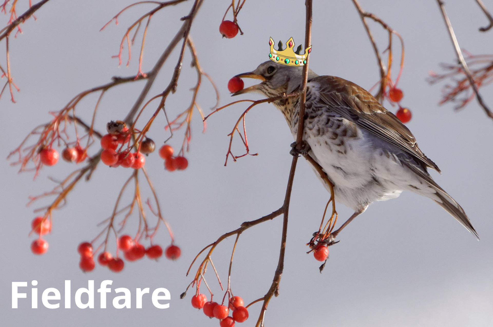

This website is the final portfolio for the course Cartographic Visualizations in GIS
 Song thrush. Photo by TheOtherKev (Pixabay)
Song thrush. Photo by TheOtherKev (Pixabay)

My map from week 1 presents the distribution of downy birch in North Karelia and it is a fairly simple map. If I were to redo it, I would add some information of the area it represents. The readings and discussions from week 4 included the idea that maps should display interactions and causality, so I would like to add something to better represent that. If the biggest cities and towns were added, maybe we could see some connection to the areas that have little to no occurrence of downy birch trees (and probably trees in general). Exploring the area even more could result seeing the impact of other human activity like industrial areas and eventually including them in the map.
This course has taught me to consider the purpose and audience of the map. On one hand, a very simple map is easy to understand, but on the other, it may lack content. The map should be created with the audience of the map in mind, who is going to be “reading” it. For my map from week 1 I would like for anyone to be able to understand it, even without knowing the area. That’s why it would be important to have some additional information. As I mentioned in the exercise in week 1, an inset map and a north arrow would give more info where this area is located. I don’t think a basemap would add that much and still maintain the simplicity of the map but maybe adding blue colour to represent the water bodies in this area, filling the empty spaces would offer more explanation. If elements were added, the layout should be considered more carefully. That is also something that I’ve taken more into consideration as a result from this course and would like to practise. I would like to try to make more complex visualizations combining text, image and graphs to a map, and testing out how to achieve good layouts.
Layout is closely related to the visual hierarchy and choosing which elements to highlight. I have found that simplicity is often better, and it’s easy to create a map that’s too complex or busy. If I try to consider this map from the point of visual hierarchy, choosing what is important and highlighting those features, I would at least change the legend. The legend is a strong and dark colour, which maybe isn’t necessary so muting the colour would be a good idea. I still like the colour scheme, but having green and red isn’t recommended, so I would probably change the legend colour entirely. I could include the red in the title, because it doesn’t affect the readability of the map like the legend does. I would make the title bolder and change the text colour to red instead of it being a background colour. An important point from this course has also been the importance of the decisions of the mapmaker, like the classification and colours. They can change how the information is understood and even distort the data. In this map the classes and their colours were difficult to choose, as well as knowing which is the best representation of reality.
I have also realized during this course that mapmaking can be free and not all maps have to have the same elements. This ties in with the purpose of the map, one should always consider the context where the map is presented and how much it influences or even limits the map itself.
How this course has affected how I want to create maps in the future:
This portfolio presents data on birds belonging in the Turdus genus in Finland. The data is from Finnish Biodiversity Information Facility/FinBIF.
Link to the dataset used (accessed 27.6.2025):
dataData filters used:
I browsed the data Finnish Biodiversity Information Facility offered on laji.fi, and eventually decided to use the bird ringing and observation data. The reason for this was mainly the fact that I feel that the data is very reliable and there’s plenty of data collected on birds. I also find data on birds and other animals to be interesting and I wanted to display something on a map of the whole of Finland. But because the amount of data on birds was so large, I had to narrow it down somehow. That lead to only including thrush birds, so birds belonging in the Turdus genus. I’m have a very limited knowledge of birds and perhaps that is why I used thrushes, as they can be seen in cities and backyards and for example fieldfare and common blackbird are one of the few birds I recognize and have seen close by. Because they are more common, I also knew that there would be enough data to create sufficient maps and graphs.
Even with only thrush birds, the data handling was slow so I wanted to filter it more and only included the ringings and sightings between the years 2015 and 2025. But as can be seen later, the final graph and maps only show data up until the year 2021. This is because I had some issues when handling the data. I narrowed it down even more by including only the summer months (jun, jul, aug), as they might spend winters elsewhere. I guess my reasoning was that it’s better to compare the species during that time to get a good overall result. I ended up with 21 488 rows of data which felt enough for this purpose, but not too large for it to be slow when handling it with python and creating visualizations.
I wanted to get an overall picture of the dataset and what it represents, so the first visualization is a graph. Graphs are especially good for a simple visualization that makes the information easier to understand. I decided on a pie chart, because I wanted to discover relative differences to compare the species. The resulting pie chart shows the share of different thrush species and which species can be found in Finland.
There’s six different species: Fieldfare, Redwing, Common Blackbird, Song Thrush, Mistle Thrush and Ring Ouzel. The species with most observations and ringings is Fieldfare, with a number of 6983. That doesn’t surprise me, as it is a very common bird here in Helsinki and I suspect that it can be found all over Finland. As we can see the Redwing and Common Blackbird aren’t that far away from Fieldfare, and the three of them make over 80% of the dataset.
By far with the least observations and ringings is Ring Ouzel, with only seven. Both Mistle Thrush and Ring Ouzel are uncommon to encounter and Song trush falls to the middle with 13%. Based on the graph we can deduct that there are notable differences between the species. It’s not possible to make definite conclusions on this subject, as I’m not familiar with the practise of ringing and what is it based on, i.e. if there’s something that affects this data that I’m not aware of. However, I think I can assume that this data reflects the overall portions of Thrush birds in Finland. As said, this graph gives us only a general picture of the data and doesn’t represent spatial differences. To find out more about the Trush species, a map is needed.
 The species with most observations and ringings. Original photo by Pablo_Pablasty (Pixabay)Now that we have more information of the different species and their relative amounts, I wanted to showcase the spatial differences in Finland. This thematic map represents the 19 regions (maakunnat) in Finland and what the most common Thrush bird based on this dataset would be. As expected, the Fieldfare is very much spread out, being the most common in six regions including Lapland and Ahvenanmaa, two very different regions. But Fieldfare still comes second in the number of regions to Redwing, which has seven compared to Fieldfare’s six. I would have expected that the map would be more uniform with Fieldfare being the most dominant and Redwing or Common Blackbird coming in first in a couple of regions, but the map has more variation. Even the Song Thrush is the most common thrush in one region, Pohjois-Pohjanmaa, even though there was only just over 2800 observations of the species in the dataset. The dataset isn’t that large so there might be something that affects this result that we might analyse further with the next map. Ring Ouzel and Mistle Thrush are missing from this map, but that was expected, as there was a large gap between them and the rest of the species. The Common Blackbird seems to be most common in Southern Finland, so that might be the most suitable environment for it.
.png)
I made this interactive map as a tool to explore the data more and perhaps get new ideas how it could be analysed. On this course the interactive map was something I enjoyed doing and wanted to include it in this portfolio. In hindsight, it might have been smart to do this in the beginning of the project to see how the data is distributed and basing the other visualizations on that.
The graph and thematic map have given an overall picture of Thrush birds in Finland, but I want to see specific places and compare different years. As is often the case, it’s difficult to present data on a static map if the goal is to display several aspects of the data. Interactive maps are great for this, as they give the user freedom to discover the data and move on a temporal level. It also possible to zoom in on the map to see smaller areas. With the thematic map, the spatial aspect was partly utilized, but this interactive map takes it even further. It is of course vital in geography to see how the data is spatially distributed.
The first observation is that most of the data is in the southern half of Finland. I think this will have affected the thematic map I made, as in some of the regions there is only a few observations, and so a single observation will have a significant impact on the result. This is also the case in Ahvenanmaa, where I can only spot a couple of observations, so it isn’t very reliable when it comes to the previous map. However, most of the Finnish regions are located in the southern half of Finland, so I think the thematic map still produces a decent result. I didn’t come to any conclusions, but it is worth considering if the reason most of the ringings and observations are in the south is because there are that much more birds there or there are more humans to make the observations. Lapland especially is a more rugged environment to live in, but it also makes sense to make the ringings and observations where there’s easier access in the south. This is a map of the summer months when the maximum number of birds should be found in Finland. Although, spring is a more active season for birds as they move and mate, so that might be when more data is collected.
The interactive map allows the species to be studied separately by clicking its name. As the thematic map hinted, the Common Blackbird is mostly in the south, more notably than the other species. The Ring Ouzel seems to be the opposite, the only observations are found in the most northern parts of Finland. It clearly prefers a different living environment to its relatives. I didn’t notice anything major when comparing different years, the variation can be seen in more specific areas. I also tried to see which type of environments the observations and ringings were made but didn’t come to a clear conclusion. It seems as though there’s some in cities, wooded areas and fields, even what seemed to be someone’s yard.
What can be deducted based on this data and visualizations